Evolving DANA's home
experience into a clearer, more scalable, and more strategic
entry point for everyday use, new feature discovery, and
trust-building.
App experience - information hierarchy - feature discoverability
As DANA expanded, Home needed to do more than act as a shortcut
screen. It had to become a strategic gateway. There were several
opportunities behind this work:
make the Home experience evolve without disorienting existing users
improve access to important services through better hit areas
and icon treatment
create more prominent surfaces for emerging products
give users stronger trust signals directly in the app
prepare Home for a broader ecosystem of assets, services, and
education
This became especially important as new use cases such as Wallet,
DANA CICIL, and DANA Protection needed stronger visibility and
clearer framing.
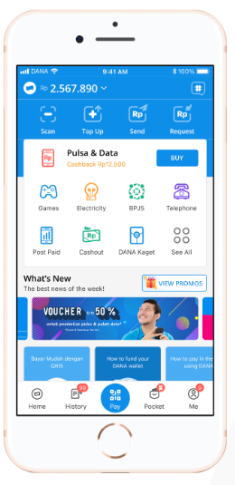
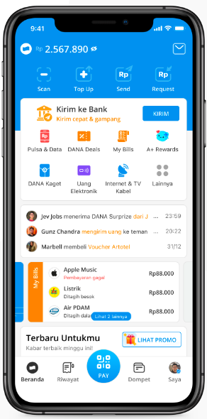
The core problem
DANA Home had to support millions of repeat interactions, which
meant even beneficial changes carried risk. A fully new interface
could create confusion, while a static Home would struggle to
support new services and shifting priorities.
The design challenge was not just visual. It was systemic:
How to modernize Home gradually, how to improve tap confidence
and service discoverability, how to give new products enough
prominence, how to add trust and reassurance in a credible way,
how to make Home scale with a growing ecosystem
Evolution
V1 to V2 - Gradual transition, not abrupt replacement
One of the key principles in evolving Home was continuity. Rather
than replacing the previous experience with a sudden new
interface, the design moved through a gradual transition. This
helped users stay oriented while still allowing the product to
improve structurally and visually.
This principle shaped the broader Home strategy: evolve the
system in-place, preserve recognizability, and introduce change
where it could deliver clearer value.
Key initiatives
1. Improving Discoverability through hit area and icon
treatment
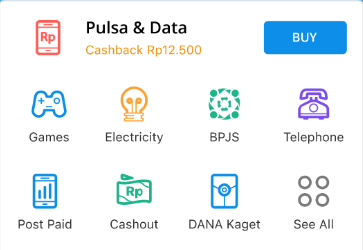
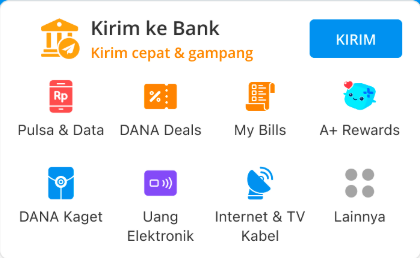
Part of the Home evolution involved improving how users access
services, not only through layout but also through interaction
clarity and icon style.
The deck highlights work around hit area and a transformation
of service icons from the older outline style into a fuller
filled style in v2.
This was a subtle design decision, but an important one.
Fuller icons tend to feel more immediate and easier to parse
at a glance, which matters on a high-frequency surface like
Home.
A related example in the deck shows improved access to Pulsa
& Data, where the median time to reach the landing page
changed from 20 seconds with the old icon style to 7 seconds
with the new icon style.
Why it mattered
Small changes in recognizability and tapability can have
outsized effects when repeated at scale across a Home surface.
2. Wallet v3 - turning Home into a gateway for assets
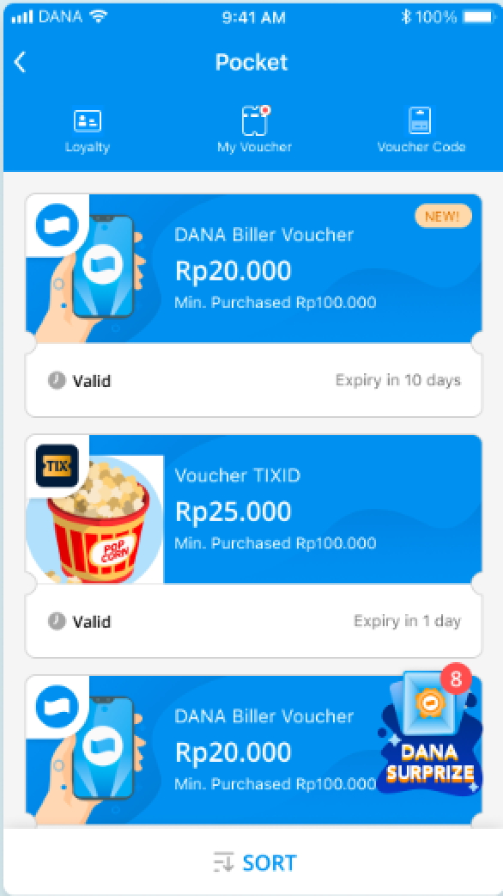
+
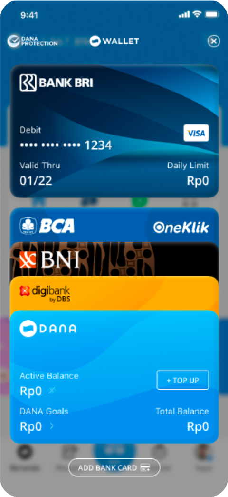
=
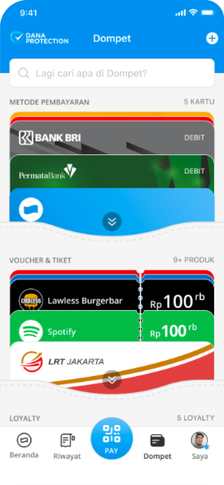
Another major initiative was Wallet v3, framed in the
material as "Powering Convenience." The idea was to create a
space where users could store and check their available
assets in one place, combining voucher and payment method
functionality while opening the door to future asset types
like investment instruments, loyalty, and digital items.
This was not just a feature addition. It represented a shift
in the role of Home and Wallet:
from separate utilities into a more unified asset hub
from one-off entry points into a more strategic product
surface
from current needs into future extensibility
The deck also notes an entry-point change for Wallet, moving
it from the right side of DANA Balance into the tab bar,
helping signal its importance more clearly. It associates
this period with strong user growth, citing ATH unique users
from 8.52M in Jan 2023 to 17.8M in July 2023, with 12.55M in
Dec 2022 also shown in the timeline.
Why it mattered
This helped position Wallet as a durable part of DANA's
ecosystem, not just a tucked-away feature.
3. Highlight of the Week - amplifying new feature discovery
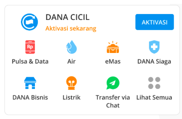
Click through Rate = 10.88%
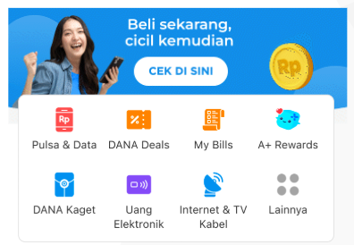
Click through Rate = 17.16%
The deck describes Highlight of the Week as a response to a
specific discoverability challenge: DANA CICIL needed a more
prominent surface, especially for users who had not yet
registered, and the existing All Services area was not giving
enough attention for first-time exposure.
The solution was to create a more prominent concept on Home
that could spotlight features with stronger visual and
messaging emphasis.
The material reports a clickthrough improvement from 10.88%
to 17.16%, and notes that the team continued optimizing
performance through copy A/B testing focused on framing DANA
CICIL as pay-later-like, highlighting merchants, and
emphasizing major use cases.
Why it mattered
Home was not only a navigation layer. It became a communication
surface for strategic product adoption.
4. DANA Protection - designing trust into the product surface
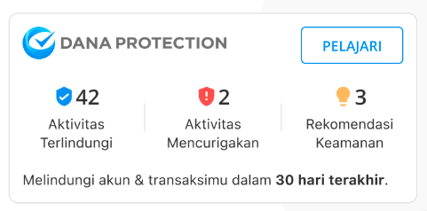
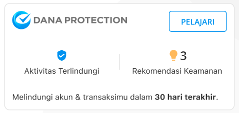
Another major thread in the material is DANA Protection,
positioned as a way to build user trust in response to
broader cybersecurity anxieties and user uncertainty around
suspicious activities and fraud. The deck references
Indonesia's low cybersecurity ranking, more than 90 data
breaches over four years, and over 100 million citizens
affected. It also notes that some users were unsure what to
do when facing fraud and sometimes escalated concerns
directly on social media.
The product response was to provide a feature and widget
where users could:
track secured activities
view suspicious activities
receive recommendations to improve account security
The material also references ATO-related use cases, with the
widget and hub helping users review suspicious activity.
Why it mattered
This was a good example of Home and adjacent surfaces doing
more than enabling transactions. They also had to reduce
anxiety and increase confidence.
5. Footmark - addressing misinformation with product context
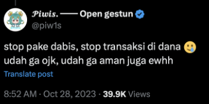
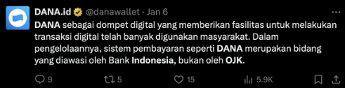
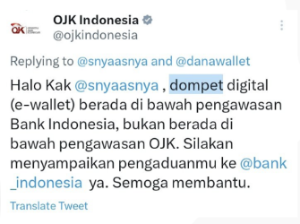
The last initiative in the material is small in form but
strong in meaning. The deck explains that misinformation on
social media caused confusion around whether DANA was
monitored by regulators. In response, beyond social
clarification, the product added contextual messaging on the
app and website through a footmark stating that DANA is
monitored by Bank Indonesia and Kominfo.
Why it mattered
This is a strong portfolio point because it shows product
design responding directly to trust gaps shaped by public
narrative, not only UI optimization.
Impact
This project was not a single redesign, but a set of design
moves that collectively made Home more strategic.
Some of the clearest signals from the material include:
a more careful evolution from Home v1 to v2 to preserve
familiarity
Reduce time to discover Key Services from 20s to 7s average at Home page after Icon style changes
stronger Wallet visibility and adoption context during a
period of growth
Highlight of the Week CTR increase from 10.88% to 17.16%
stronger trust-supporting surfaces through Protection and
Footmark interventions
If you want, this section can also be reframed as:
Outcomes
improved discoverability, stronger feature amplification,
clearer asset ecosystem framing, better trust communication,
more scalable Home strategy
Reflection
This work taught me that Home is not just a dashboard. It is a
product narrative layer.
A strong Home experience has to do several jobs at once:
stay familiar for repeat users
surface the right actions quickly
introduce new products without clutter
build trust in moments of uncertainty
scale with business and ecosystem growth
What I find most interesting about this project is that many of
the strongest design decisions were not dramatic visual changes.
They were careful, system-level moves: evolving gradually,
improving access, reframing entry points, amplifying discovery,
and inserting trust where users needed reassurance most.